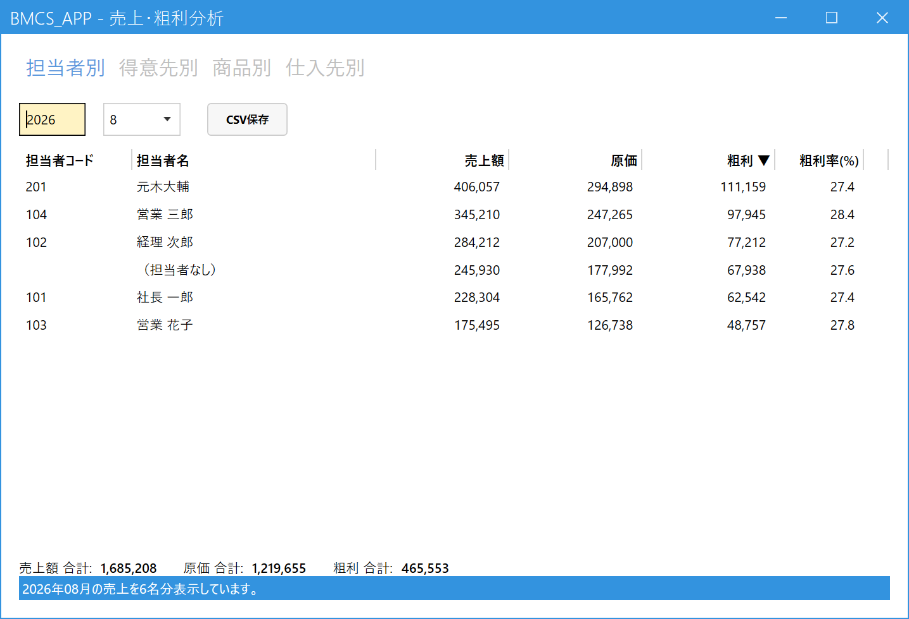
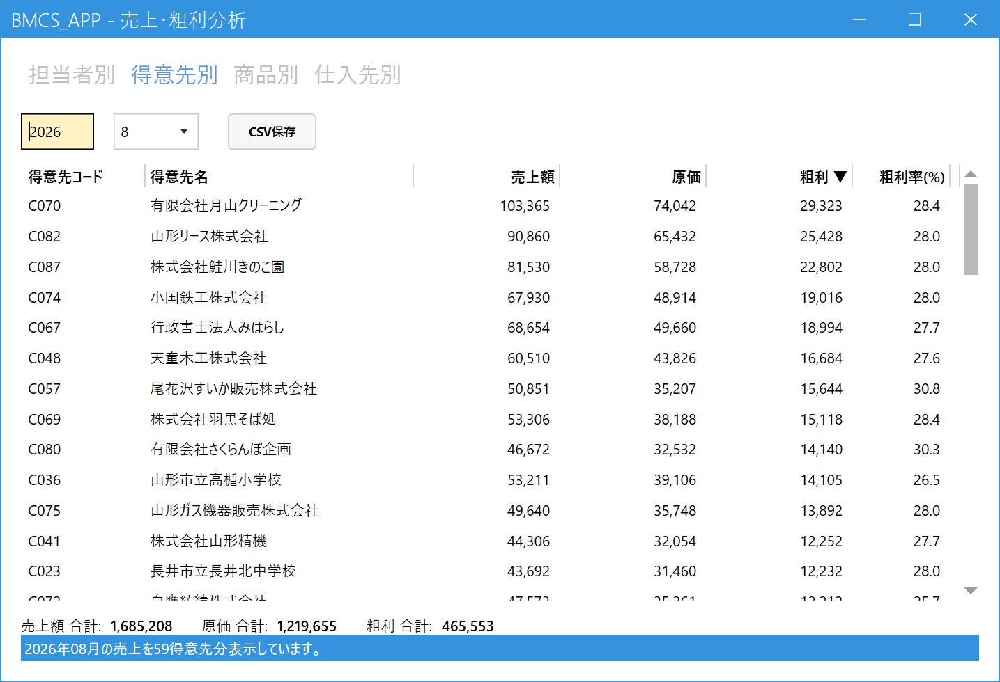
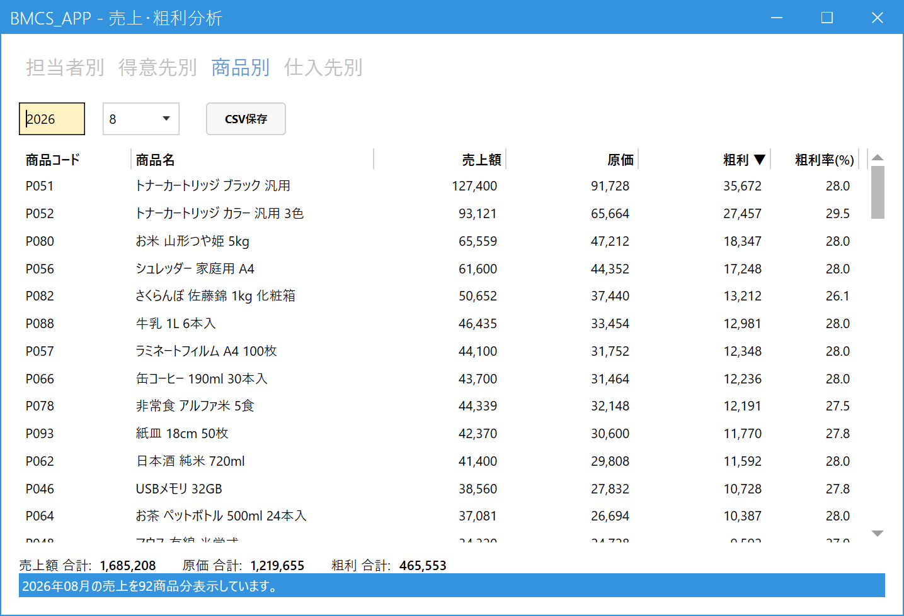
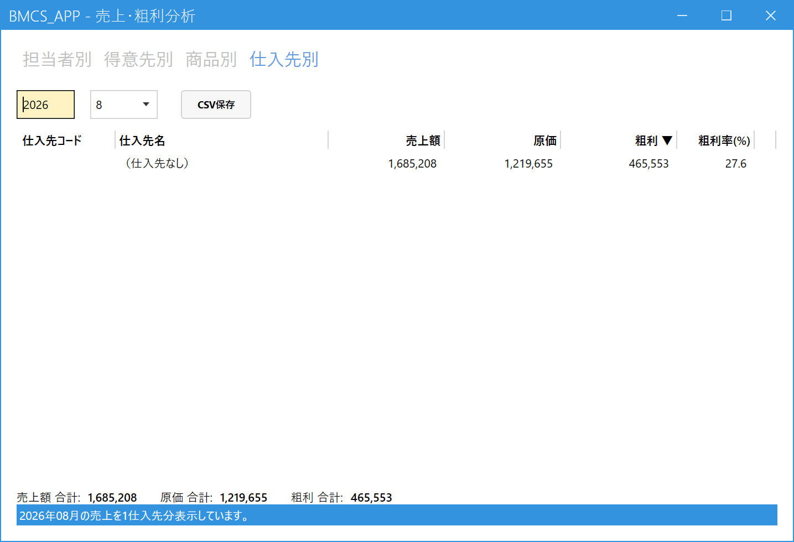
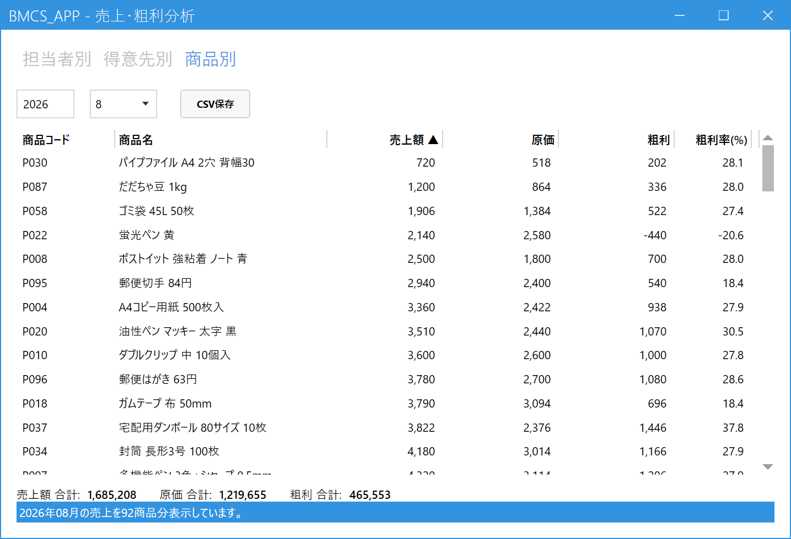

売上・粗利を分析する
こんなときに使います
「今月、誰が、どのお客様に、どの商品をいくら売って、いくら利益が出たか」を確認します。
月ごとに、売上額・原価・粗利・粗利率が出ます。担当者別・得意先別・商品別・仕入先別を、画面上のタブで切り替えます。見るだけの画面で、データは変わりません。
「今月、誰が、どのお客様に、どの商品をいくら売って、いくら利益が出たか」を確認します。
月ごとに、売上額・原価・粗利・粗利率が出ます。担当者別・得意先別・商品別・仕入先別を、画面上のタブで切り替えます。見るだけの画面で、データは変わりません。
1.月を選んで表示する
メインメニューの「分析」の中の「売上・粗利分析」を開きます。開くと担当者別の、今月の集計が表示されます。ほかの月を見るときは、左上の年（4桁）と月の欄を変えると、すぐに表示し直します。月次締めをしていない月でも見られます。

- タブ：集計の単位を切り替えます（下の表参照）。選んだタブの文字が青くなります。
- 年・月：集計する月です。左が年（4桁）、右が月です。どのタブでも共通の条件です。
- CSV保存：表示している一覧をCSVファイルに保存します（下の「並べ替えとCSV保存」参照）。
- 列の見出し：クリックすると、その列で並べ替えます。開いた直後は粗利の大きい順（見出しに「▼」が付いています）です。
- ごとの集計：担当者（得意先・商品・仕入先）ごとの売上額・原価・粗利・粗利率が並びます。
- （担当者なし）：担当者が決まらない売上をまとめた行です（下の「担当者の決まり方」参照）。担当者別のタブにだけ出ます。
- 合計：一覧全体の売上額・原価・粗利の合計です。どのタブでも同じ金額になります。粗利がマイナス（原価割れ）のときは、一覧の粗利・粗利率と同じく赤字で表示されます。
| タブ | 集計の単位 |
|---|---|
| 担当者別 | 売上の担当者ごと。 |
| 得意先別 | 売上伝票の得意先ごと。 |
| 商品別 | 売上の明細の商品ごと。 |
| 仕入先別 | 売上の明細の仕入先ごと（売上入力の明細の「仕入先」欄に入っている仕入先）。 |

- 「得意先別」のタブ：タブを押すと、同じ年・月のまま得意先別の集計に切り替わります。
- 得意先ごとの集計：得意先ごとの売上額・原価・粗利・粗利率が並びます。件数が多くて画面に収まらないときは、右端のスクロールバーで下へ送ります。

- 「商品別」のタブ：商品ごとの売上額・原価・粗利・粗利率が並びます。ほかの部分（年・月、CSV保存、見出し、合計）はほかのタブと同じです。

- 「仕入先別」のタブ：仕入先ごとの売上額・原価・粗利・粗利率が並びます。ほかの部分はほかのタブと同じです。
- （仕入先なし）：明細に仕入先が入っていない売上をまとめた行です（一覧の最後に出ます）。仕入先なしの行（原価を登録した仕入先がない商品）で入力した明細や、仕入先を使い始める前の売上は、ここに入ります。この例の月は、すべて仕入先なしの売上です。
2.数字の見かた
| 項目 | 意味 |
|---|---|
| 売上額 | その月の売上の税抜金額。返品・値引を差し引いた金額です。 |
| 原価 | 数量 × 原価単価 の合計。原価単価は、売上入力で明細に入った原価です（仕入先の原価があればそれ、なければ商品の標準原価）。 |
| 粗利 | 売上額 − 原価。マイナスのときは赤字で表示されます（粗利率・合計も同じ）。 |
| 粗利率(%) | 粗利 ÷ 売上額。売上額が0のときは空欄です。 |
担当者の決まり方
担当者別のタブで、売上をどの担当者に数えるかのルールです。
- 売上伝票の担当者欄に入っている人。
- 伝票の担当者が空なら、得意先マスタの営業担当。
- どちらも無ければ「（担当者なし）」。
仕入先の決まり方
仕入先別のタブでは、売上の明細の仕入先欄に入っている仕入先で数えます（売上入力の「仕入先と原価」参照）。
- 仕入先欄が空の明細は、「（仕入先なし）」に数えます。
- あとから仕入先マスタで無効化した仕入先も、名前つきで出ます。
- 値引の行は、その明細の仕入先に、マイナスの売上額（原価は0）として数えます。
3.並べ替えとCSV保存
- 並べ替え：列の見出しをクリックすると、その列の小さい順（▲）に並びます。もう一度クリックすると大きい順（▼）になります。開いた直後は粗利の大きい順です。タブを切り替えても、並べ替えた列はそのままです。
- CSV保存：「CSV保存」ボタンを押して保存先を決めると、画面に見えている並び順のまま、今開いているタブの内容をCSVファイルに保存できます。Excelで開けます。

- 並べ替えた列：見出しに「▲」（小さい順）または「▼」（大きい順）が付きます。
集計は、画面を開くたび（年・月やタブを変えるたび）にその時点の売上から計算し直します。取り消した売上は含みません。
請求の集約（支店の売上を本社にまとめて請求する設定）があっても、売上伝票の得意先のまま、担当者・得意先に計上します。